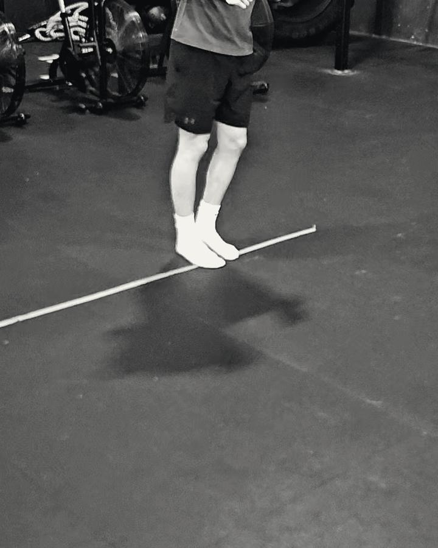
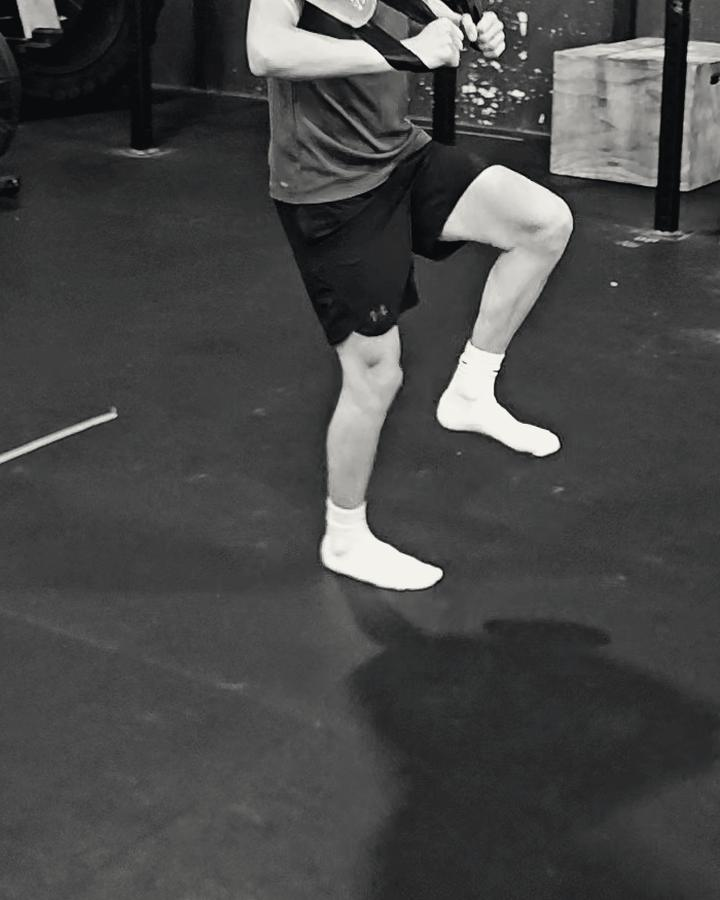
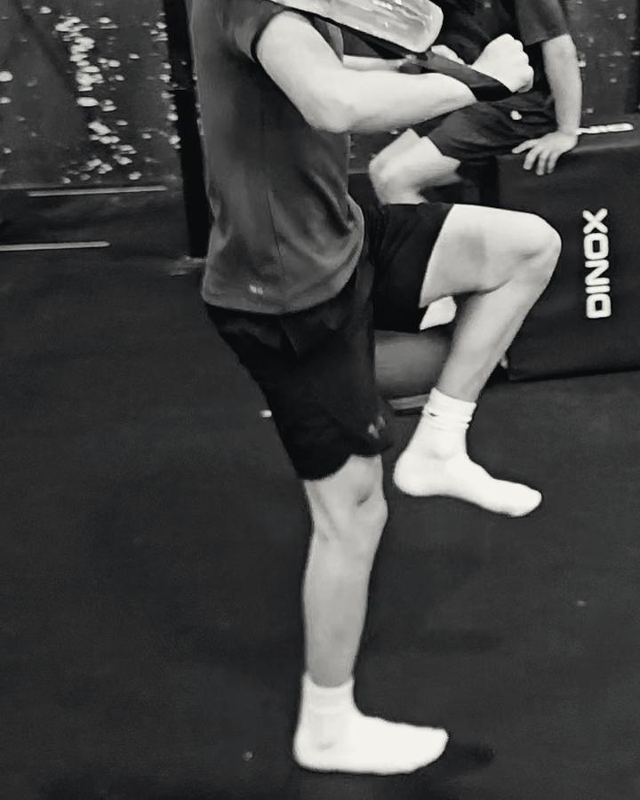
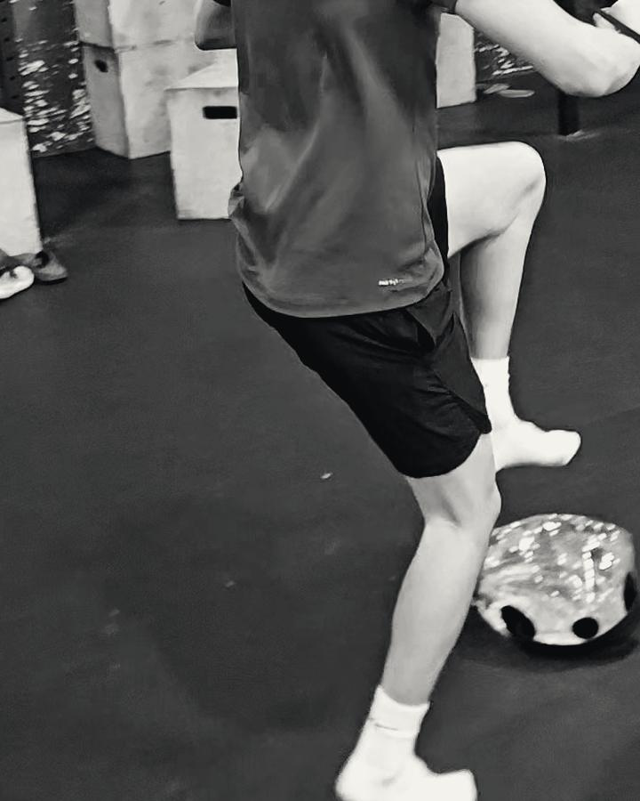
Speed Nopeus
Elastinen, rytminen nopeus, ei painava voimantuotto.
SBAQ Academy · menetelmä ja testit
Tällä sivulla on menetelmän perusteet, välineet, testipatteristo, ajattelun tausta ja seurantatyökalun tilanne. Palvelun sisältö ja yhden pelaajan seurantasarja ovat etusivulla.
Perinteinen kysymys
Kuinka paljon pelaaja tuottaa voimaa?
SBAQ:n kysymys
Pystyykö pelaaja jarruttamaan, hallitsemaan kehoaan ja tuottamaan uuden liikkeen sekunnin murto-osassa?
SBAQ ei ole yksittäinen harjoite eikä uusi fysiikan teoria. Se on tapa yhdistää nopeus, tasapaino, ketteryys, reagointi ja voimantuotto samaan harjoitteluun niin, että niiden pitäisi lopulta näkyä parempana liikkumisena jäällä.




Elastinen, rytminen nopeus, ei painava voimantuotto.
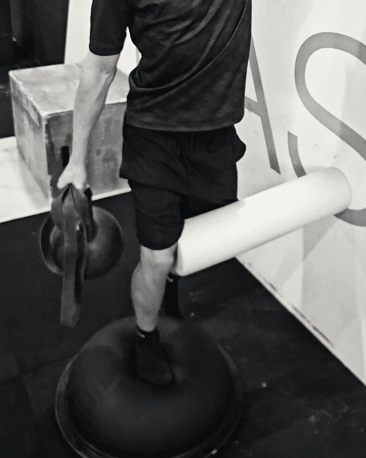
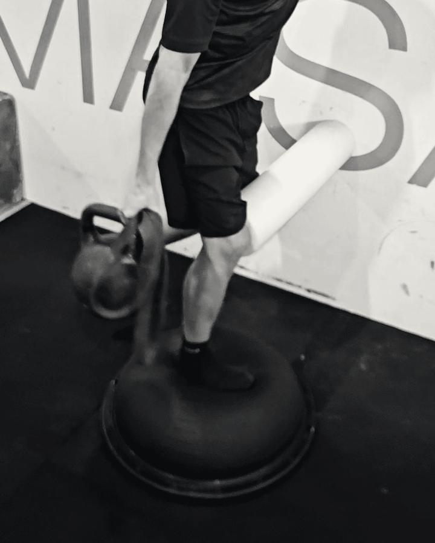
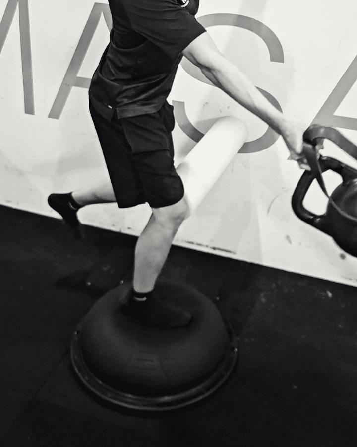
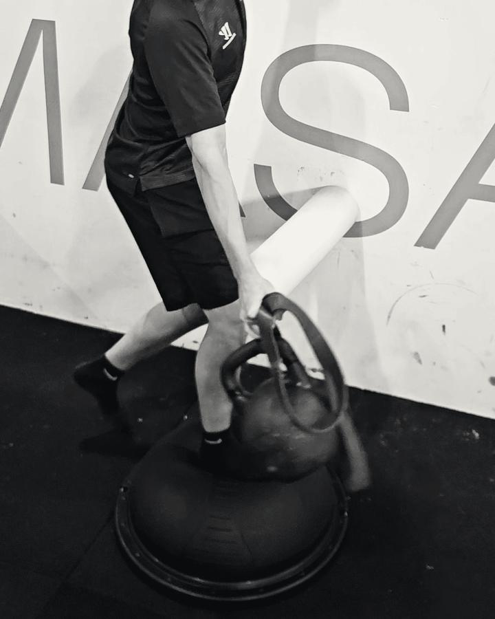
Yhden jalan dynaaminen hallinta ja keskivartalon stabiliteetti.
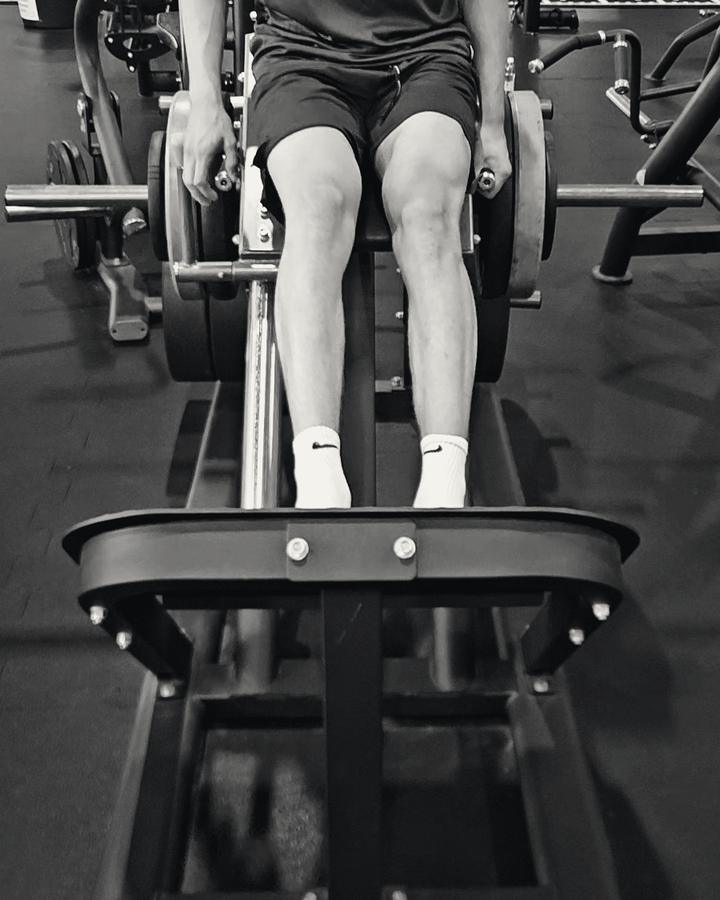
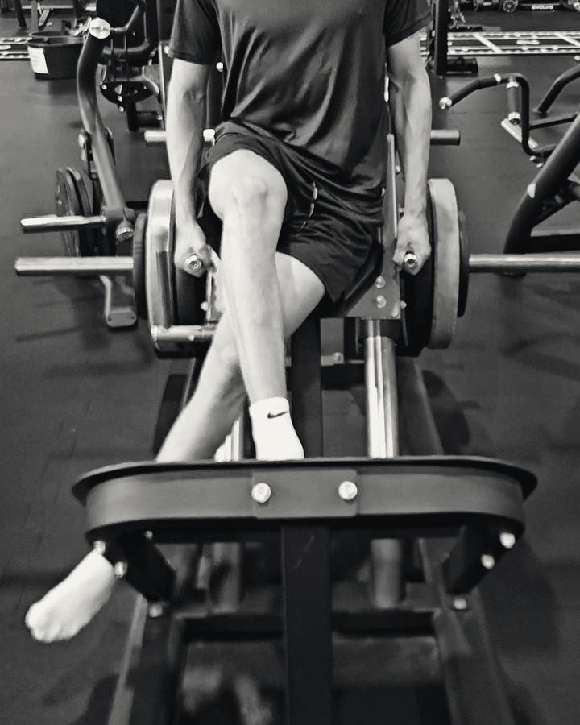
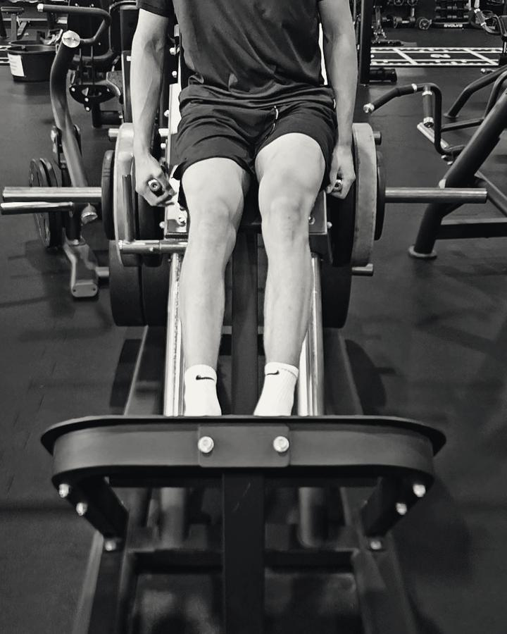
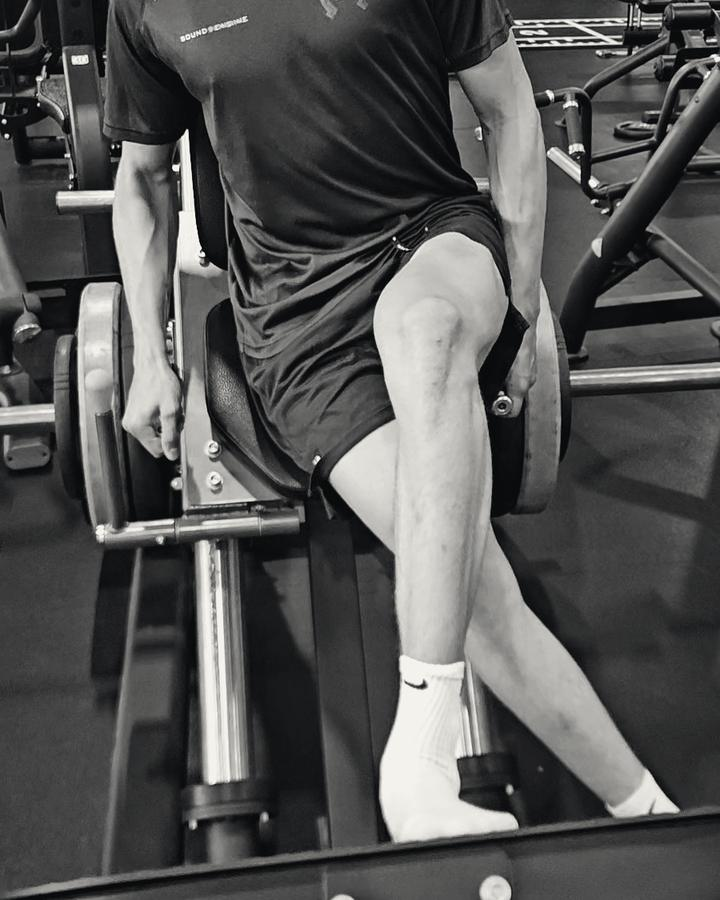
Suunnanvaihdot tasapainon säilyttäen.
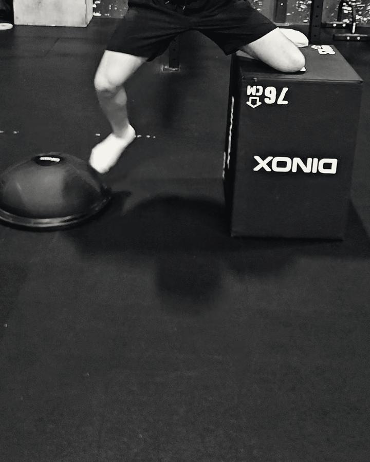
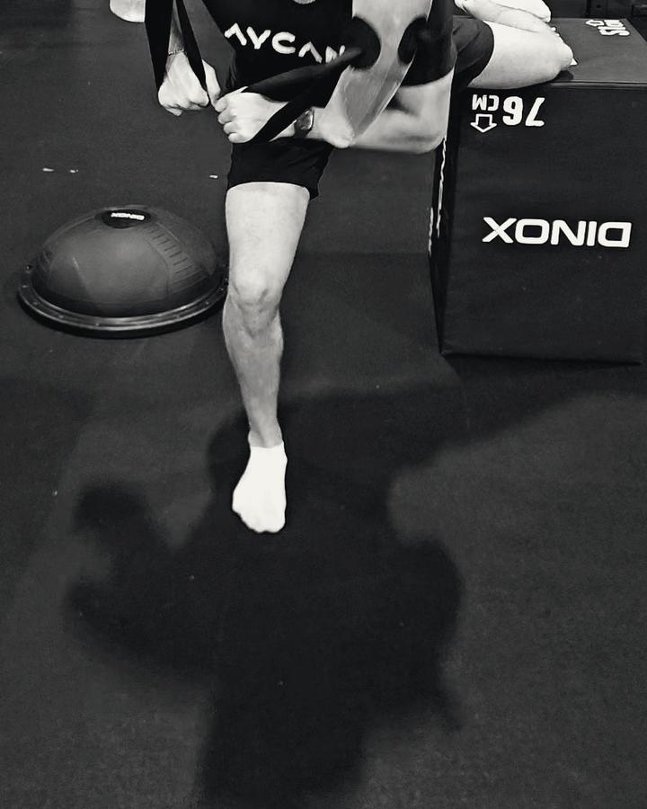
Reaktiivinen snap: jalan nopea irtiotto rangan elastisuudella.
Kuvasarjat ovat liikkeen peräkkäisiä ruutuja. Vie osoitin kuvan päälle tai napauta, niin sarja pyörii.
Väline · vesisäkki
Vesi liikkuu jatkuvasti säkin sisällä. Hermosto ja keho joutuvat ratkaisemaan tasapainon ja voimantuoton ongelman uudelleen joka sekunti, samaan tapaan kuin jäällä. Tavoite ei ole nostaa mahdollisimman suurta painoa, vaan kehittää hermoston kykyä hallita liikettä nopeasti muuttuvissa tilanteissa.
Levytanko rakentaa maksimivoiman. Vesisäkin tarkoitus on tehdä siitä hallittavaa pelinopeudessa. Kumpikin tarvitaan, ja siirtymä jäälle mitataan, ei oleteta.
Väline · BOSU
Luistelun liuku on yhden jalan tasapainotehtävä kapealla, epävakaalla alustalla. BOSU harjoittaa samaa yhden jalan hallintaa salilla. Mitä automaattisemmin tasapaino löytyy, sitä pidempi, rennompi ja taloudellisempi liuku.
BOSU ei opeta liukua suoraan, eikä epävakaalla alustalla tuoteta yhtä paljon voimaa kuin vakaalla. Se on tasapainon ja hallinnan väline, ja liuku itse hioutuu vain jäällä.
Testaus tehdään yhteistyössä yliopistojen, tutkimustoimijoiden ja urheilulaboratorioiden kanssa. Testauslaitteet ja menetelmät on valittu tukemaan juuri niitä ominaisuuksia, joita SBAQ kehittää: nopeaa voimantuottoa, elastista tehoa ja pelinomaista reagointia. Tavoite on tehdä harjoittelusta mitattavaa ja tavoitteellista. Puolierot mitataan erikseen.
| Nro | Osa-alue | Testi | Mitä saadaan? |
|---|---|---|---|
| 01 | KestävyysHapenottokyky | Suora hapenottotesti juoksumatolla hengityskaasuanalyysillä. |
|
| 02 | NopeusKiihdytys, sali ja jää | Valokennomittaus molemmissa ympäristöissä, jotta nähdään, siirtyykö teho luisteluun. |
|
| 03 | Reaktio ja ketteryysPelinomainen reagointi | Valostimuluksiin perustuvat testit suunnanmuutoksista ja reagoinnista. |
|
| 04 | Voima ja tehoRäjähtävyys ja puolierot | Kuinka paljon voimaa pelaaja tuottaa ja ennen kaikkea kuinka nopeasti? |
|
Jokaisella testikerralla kirjataan lisäksi ikä, pituus, paino ja sarjataso, jotta tulokset ovat suhteutettavissa myöhemmin. Eri testien lukuja ei verrata ristiin: esimerkiksi Keiser-jalkaprässin W/kg ei ole vertailukelpoinen Wingate-pyörätestin viitearvojen kanssa. Työkalun demossa on tällä hetkellä osa-alueen 04 testit; muut lisätään sitä mukaa kuin mittausdataa kertyy.
Kiihdytys, jarrutus, suunnanmuutos, taklaus ja laukaus ovat kaikki muutaman sekunnin maksimisuorituksia. Ottelussa niitä tulee kymmeniä, ja ero syntyy siitä, kuinka nopeasti räjähtävyys palautuu suoritusten välillä. SBAQ harjoittaa juuri tätä.
Harjoittelun kaksi tavoitetta, jotka pidetään erillään
Lyhyet maksimisuoritukset tuoreena ja täydet palautukset välissä, jotta jokainen toisto on yhtä nopea. Jos nopeus putoaa selvästi, sarja lopetetaan. Räjähtävyyttä ei rakenneta hitailla toistoilla väsyneenä.
Kun räjähtävyys on rakennettu, palautuksia lyhennetään hallitusti. Tavoite on sama teho yhä uudelleen ja mahdollisimman pieni pudotus, kuten ottelussa vaihdosta toiseen.
Molempia tarvitaan, mutta eri päivinä tai harjoituksen eri osissa. Pelkkä pitkä ja raskas harjoittelu ei tee pelaajasta räjähtävää ottelun lopussa. Ajatus on harjoitusfysiologian perusasiaa; SBAQ:n oma osuus on se, miten se viedään yhden jalan liikkeisiin, kuormituksen annosteluun ja testaukseen.
Toistettavaa räjähtävyyttä mitataan tulevaisuudessa toistotestillä, jossa sama maksimisuoritus tehdään sarjana lyhyillä palautuksilla ja seurataan tehon pudotusta. Testi lisätään patteristoon, kun sen protokolla on vakioitu.
SBAQ:n painopiste on nopeassa voimantuotossa ja elastisessa tehossa. Maksimivoiman ja kestävyyden pohja rakennetaan seuran perusharjoittelussa, ja SBAQ tekee siitä käyttökelpoista pelinopeudessa. Siksi seurannan painopiste on tehossa: maksimivoima voi pysyä paikallaan samalla kun räjähtävyys nousee voimakkaasti. Työkalu on rakennettu näyttämään juuri tämä ero.
Keho harjoitetaan kokonaisuutena, ei erillisinä lihaksina. Ajattelun ydin on, että voima syntyy keskivartalosta ja siirtyy ketjuna jalkaan ja jäähän.
Ensin hermoston kyky käyttää voimaa, vasta sen päälle lisää voimaa ja massaa. Näin uusi lihasmassa on toiminnallista.
Jaksotettu kuormitus tuottaa väliaikaisia notkahduksia testituloksiin. Kun ne on kirjattu, käyrän muoto on tulkittavissa oikein.
SBAQ ei perustu yhteen teoriaan, vaan yhdistää seitsemän lähestymistapaa: Spinal Engine (Gracovetsky) · Triphasic (Dietz) · plyometriikka (Chu) · räjähtävä voima (Verkhoshansky) · hermosto ja taitokaaos (Marinovich) · faskialinjat (Myers, Gibbons) · motorinen oppiminen (Newell).
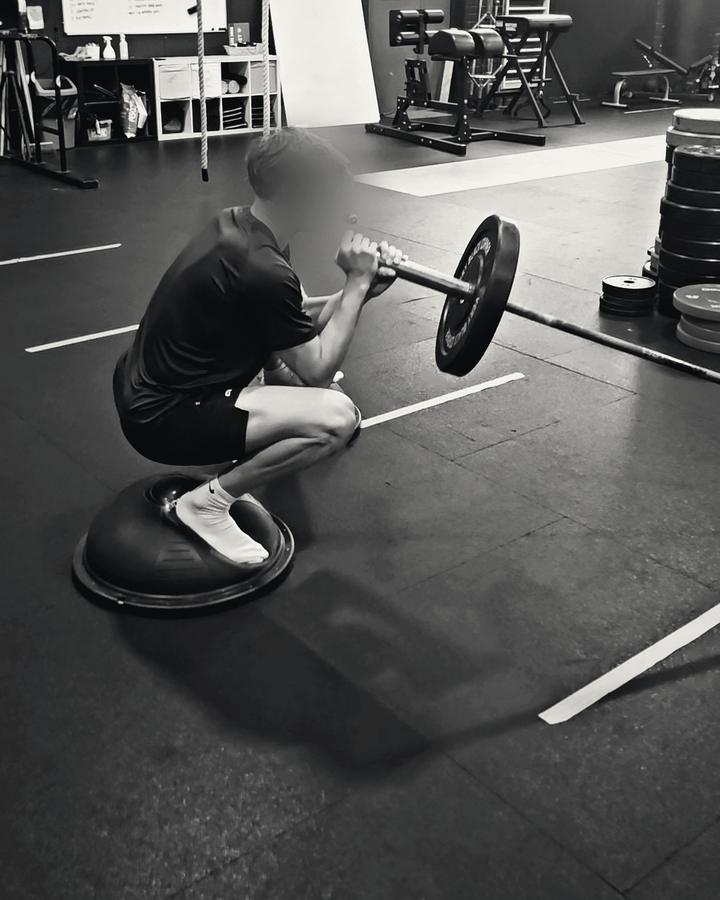
01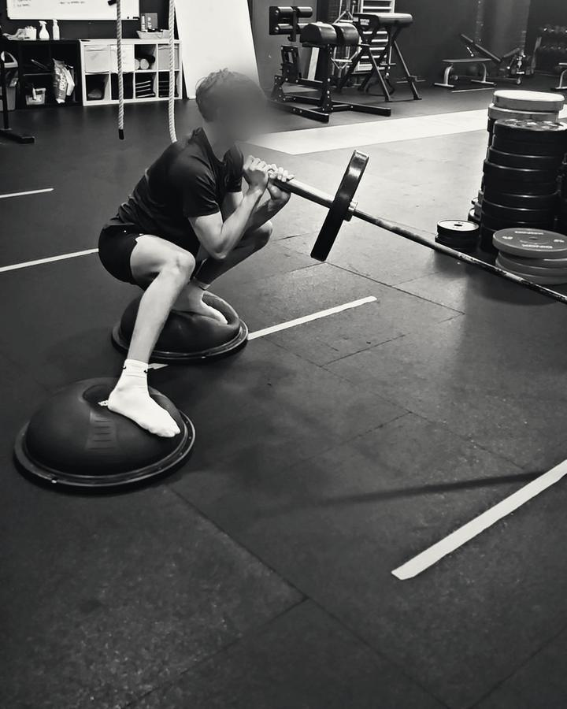
02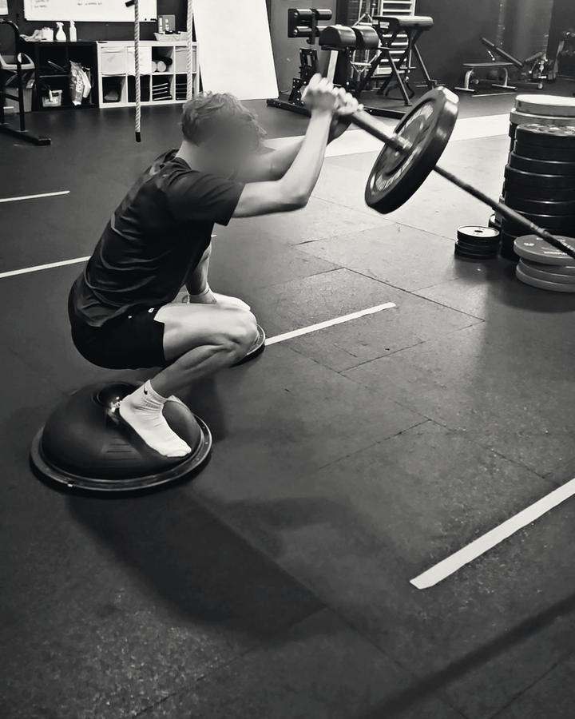
03Viisi periaatetta, joista SBAQ-harjoittelu tunnistetaan
Mitä SBAQ lisää seuran nykyiseen fysiikkavalmennukseen
SBAQ ei kumoa seuran fysiikkavalmennusta eikä kilpaile sen kanssa. Nykyaikainen fysiikkavalmennus tekee jo yksijalkaista työtä, plyometriaa ja nopeusvoimaa; SBAQ tuo siihen liikkeen laadun painotuksen ja testipohjaisen seurannan samalla protokollalla.
Seurantatyökalu on kehitysvaiheessa. Tässä mitä on valmiina ja mitä tehdään seuraavaksi.
| Valmis | Selaimessa toimiva työkalu | Pelaajalista, pelaajanäkymä kehityskaarineen, vertailu, tulosten syöttö ja tulostettava raportti. Toimii ilman asennusta ja ilman ulkoisia kirjastoja. |
|---|---|---|
| Valmis | Oikea testidata | Työkalu ajaa todellisia mittaustuloksia kevään ja kesän 2026 testijaksolta: kaksi pelaajaa, 20 testikertaa. Pelaajien nimet on pseudonymisoitu, mittausarvot ovat alkuperäisiä. |
| Työn alla | Taustatiedot testikertoihin | Ikä, pituus, paino ja sarjataso jokaiselle testikerralle. Ilman niitä tuloksia ei voi suhteuttaa ikään eikä sarjatasoon, vaan vain pelaajan omaan lähtötasoon. |
| Seuraavaksi | Tallennus ja kirjautuminen | Tietokanta, käyttäjätunnukset ja roolit, jotta seuran data säilyy turvallisesti ja pelaaja näkee vain omansa. |
| Seuraavaksi | Viitearvot | Julkaistut normit ja kertyneet kokemusarvot vertailukohdaksi sarjatasoittain ja ikäluokittain. |
| Seuraavaksi | AI-avusteinen raportti | Numerot lasketaan datasta, ja kielimalli kirjoittaa niistä valmentajalle ja pelaajalle luettavan tulkinnan ja suositukset. |